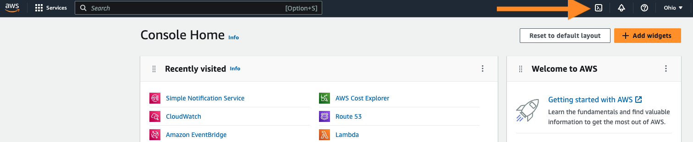

Nymeria Workshop Teardown
Complete the following steps to destroy the resources created during the Nymeria workshop.
Azure Subscription
Complete the following steps to destroy the resources created in your Azure subscription.
-
Sign into the Azure Portal and press the Cloud Shell icon next to the search box.

-
Run the following commands to destroy the resources created by the Federated Identity GitHub action.
cd ~/clouddrive/nymeria/src/virtual_machines/01_azure_init/ export TF_VAR_resource_group_name=$(terraform output --json | jq -r '.resource_group_name.value') cd ~/clouddrive/nymeria/src/virtual_machines/04_gh_action/ export TF_VAR_aws_default_region="us-east-2" export TF_VAR_aws_access_key_id="AKIAEXAMPLE" export TF_VAR_aws_secret_access_key="EXAMPLESECRETACCESSKEY" export TF_VAR_aws_cross_cloud_role_arn="arn:aws:iam::123456789012:role/EXAMPLE" export TF_VAR_aws_s3_bucket_id="example-bucket" export TF_VAR_azure_virtual_machine_managed_identity_id="/subscriptions/EXAMPLE-SUBSCRIPTION-ID/resourceGroups/example-resource-group/providers/Microsoft.ManagedIdentity/userAssignedIdentities/example-managed-identity" export TF_VAR_google_cloud_project_id="nymeria-123456" export TF_VAR_google_cloud_service_account_key="ZXhhbXBsZQo=" export TF_VAR_google_cloud_workload_identity_client_configuration="ZXhhbXBsZQo=" export TF_VAR_gcs_bucket_id="example-bucket" terraform destroy -auto-approve -
Run the following commands to destroy the resources created by the configuration in the
~/clouddrive/nymeria/src/01_azure_initdirectory.
AWS Account
Complete the following steps to destroy the resources created in your AWS account.
-
Sign into the AWS Web Console.
-
Set the region (top right-hand corner) to
us-east-2 (Ohio). -
Press the Cloud Shell icon next to the search box.

-
Run the following commands to destroy the resources created by the configuration in the
~/clouddrive/nymeria/src/02_aws_initdirectory.
Google Cloud Project
Complete the following steps to destroy the resources created in your Google Cloud project.
-
Sign into the Google Cloud Web Console.
-
Select your project in the dropdown list (see #1 in the screenshot below).
-
Press the Cloud Shell icon next to the search box (see #3 in the screenshot below).

-
Run the following commands to destroy the resources created by the configuration in the
~/nymeria/src/virtual_machines/03_gcp_init/directory. You will need to Authorize the Cloud Shell to access your Google Cloud project.cd ~/nymeria/src/virtual_machines/03_gcp_init/ export TF_VAR_project_id=$(terraform output --json | jq -r '.gcp_project_id.value') export TF_VAR_azure_tenant_id="EXAMPLE-TENANT-ID" export TF_VAR_azure_virtual_machine_managed_identity_principal_id="EXAMPLE-PRINCIPAL-ID" terraform destroy -auto-approve
GitHub Repository
-
Browse to your Nymeria GitHub repository's Settings.

-
Delete the GitHub Nymeria GitHub repository